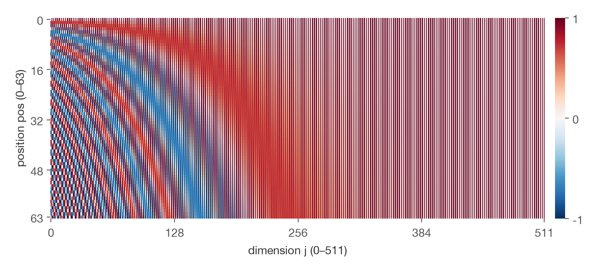
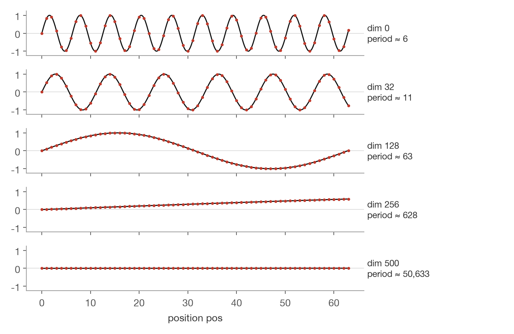
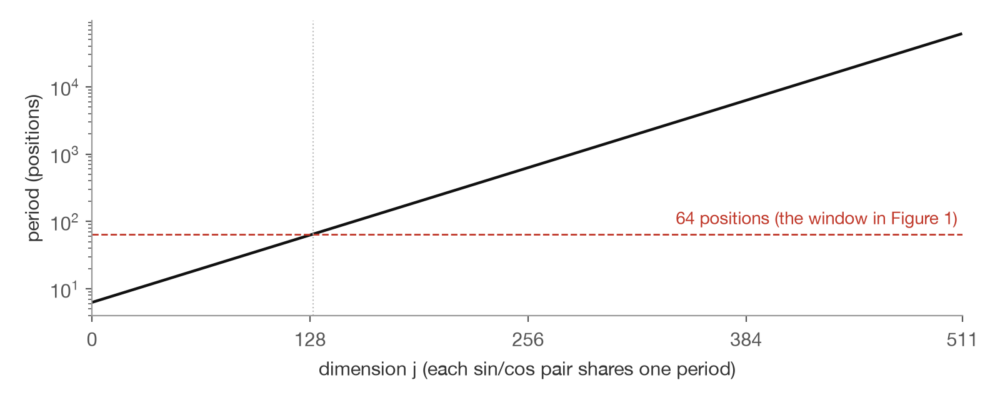
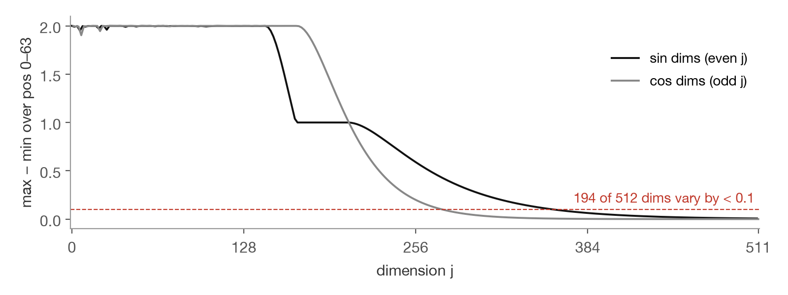
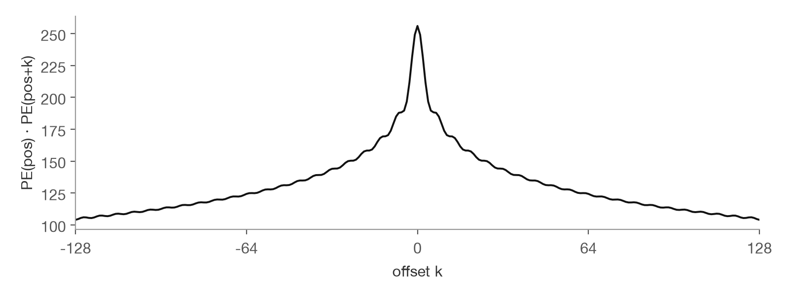

Positional Encoding in the Transformer
The original Transformer gives every position a fixed 512-dimensional vector of sines and cosines and adds it to the word embedding. Early dimensions change fast and separate neighbouring positions; late dimensions change slowly and separate distant ones.
1. Attention ignores order
A token is the unit of text the model reads: a word or a piece of a word. In self-attention, token i scores every token j with a dot product of a query vector and a key vector:
Nothing in this formula depends on where token j sits. Swap two tokens and the outputs are swapped too, so “dog bites man” and “man bites dog” look the same to the layer. The paper therefore has to inject position explicitly [1].
2. Add a position vector to each input
\(t_i\) is the id of the i-th token. \(E\) is the learned embedding table, one row per token. \(d_{\text{model}} = 512\) is the model width; the paper multiplies embeddings by \(\sqrt{d_{\text{model}}}\) [1]. \(PE(i)\) is the position vector for position i, also 512-dimensional.
3. The formula
Dimensions come in 256 sin/cos pairs; pair i has frequency \(\omega_i\) and period \(2\pi/\omega_i\). The periods run from \(2\pi \approx 6\) positions to about \(10000 \cdot 2\pi\) [1]. The table has no trainable parameters.

4. Each column is a sine wave
Pull single columns out of Figure 1 and each one is a sinusoid. Only the period differs.

A binary counter has the same structure: the lowest bit flips every step, the next every 2 steps, the next every 4. Fast dimensions tell neighbours apart, slow dimensions tell distant positions apart, and together each position gets a distinct vector.
5. Periods grow geometrically
Each pair’s period is 3.6% longer than the previous one, so on a log axis the periods form a straight line. From dimension 130 on, the period is longer than the 64 positions shown in Figure 1.

6. The right half is constant only in short sequences
A dimension whose period is much longer than the sequence stays near its starting value: \(\sin 0 = 0\) (white) or \(\cos 0 = 1\) (red). That is the red-and-white striping on the right of Figure 1.

MeasuredIn a 64-token window, position information sits mostly in the early dimensions, and the late dimensions act as near-constant offsets that the learned embedding can use freely. This split comes from the choice of periods; nothing in the architecture enforces it. We did not check whether trained models actually use the dimensions this way.
7. A shift by k is a rotation
Here \(s_{pos} = \sin(\omega_i\, pos)\) and \(c_{pos} = \cos(\omega_i\, pos)\) are pair i of \(PE(pos)\). The matrix depends on the offset k and not on pos, so \(PE(pos+k)\) is a fixed linear function of \(PE(pos)\).
PaperThe authors hypothesized that this lets the model learn to attend by relative position. The paper does not test the hypothesis [1].
8. Similarity depends only on distance
Using \(\sin a \sin b + \cos a \cos b = \cos(a-b)\), the dot product of two position vectors depends only on their distance k. Nearby positions score higher.

9. Learned embeddings did as well
PaperReplacing the sinusoids with a learned positional embedding (one trainable vector per position) gave perplexity 4.92 and BLEU 25.7 on English–German newstest2013, against 4.92 and 25.8 for the sinusoidal base model (Table 3, row E) [1]. The authors kept sinusoids because they may extrapolate to sequences longer than those seen in training; the paper has no experiment on this.
10. Adding mixes word and position
Yes, they mix: the cross terms are noise for attention. The paper never compares adding with concatenating. Three reasons it still works, all Inference:
- Comparable scale. PE entries lie in [−1, 1]. In tensor2tensor, embeddings are initialized with standard deviation \(d_{\text{model}}^{-1/2}\) and multiplied by \(\sqrt{d_{\text{model}}}\), so their entries are also about 1 [2]. The paper does not explain the \(\sqrt{d_{\text{model}}}\).
- Soft dimension split. Figure 4: in short sequences, late dimensions carry little position signal, leaving room for word information.
- Learned projections. \(q = xW^Q\) and \(k = xW^K\) can learn to pick out word-related and position-related directions before the dot product.
11. What replaced it: RoPE
Rotary Position Embedding (RoPE) [3] applies the rotation from section 7 to each pair of query and key dimensions inside every attention layer, instead of adding a vector at the input. The attention score then sees position only through the offset \(n-m\), and there are no word–position cross terms. LLaMA [4] and Qwen [5] use RoPE.
- Vaswani et al., Attention Is All You Need, NeurIPS 2017. Section 3.4 (embedding scale), Section 3.5 (positional encoding and the relative-position hypothesis), Table 3 row (E).
- tensor2tensor, layers/modalities.py: embedding initializer
hidden_dim**-0.5;sqrt_depthmode multiplies byhidden_size**0.5. - Su et al., RoFormer: Enhanced Transformer with Rotary Position Embedding, 2021.
- Touvron et al., LLaMA: Open and Efficient Foundation Language Models, 2023.
- Bai et al., Qwen Technical Report, 2023.
Figures 1–5 are computed by the author from the formula in [1].